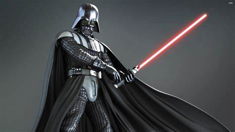
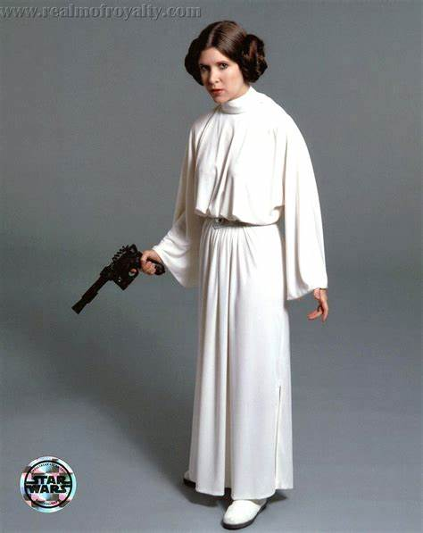
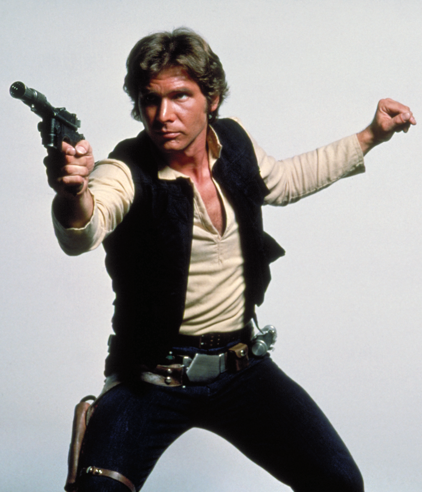
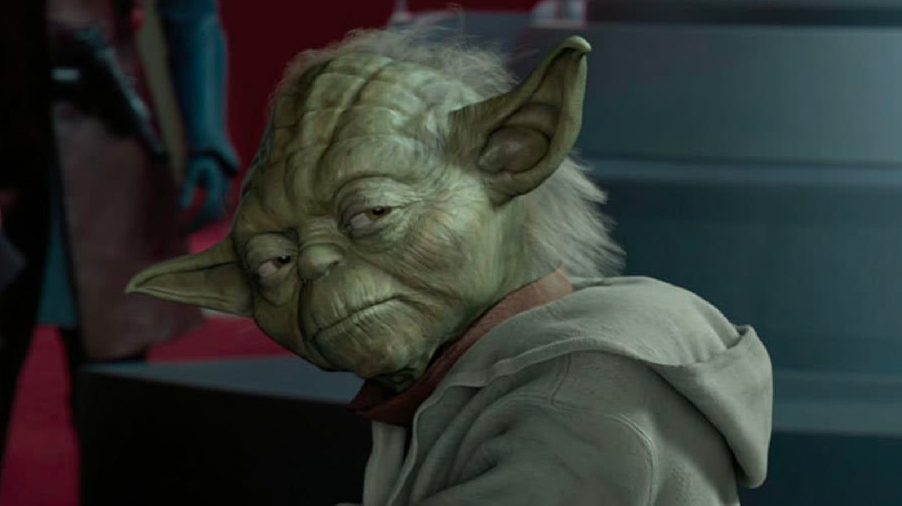
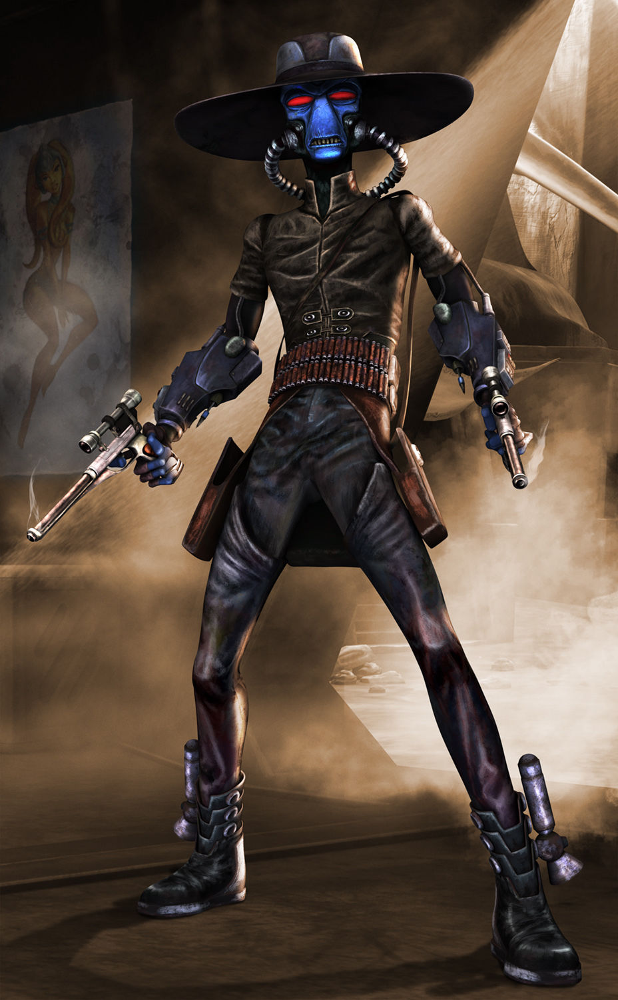

Personajes Principales
Luke Skywalker

El héroe de la saga original. Luke Skywalker es un Jedi que busca restaurar la paz en la galaxia.
Darth Vader
Anteriormente conocido como Anakin Skywalker, Darth Vader es un Sith Lord y uno de los villanos más icónicos de Star Wars.
Leia Organa
Princesa, líder de la Alianza Rebelde y hermana de Luke. Leia es clave en la lucha contra el Imperio.
Han Solo
Un contrabandista con un corazón de oro. Han Solo se une a la lucha contra el Imperio.
Yoda
Un Maestro Jedi, sabio y poderoso. Entrenó a generaciones de Jedi, incluido Luke Skywalker.
Cad Bane
Uno de los cazarrecompensas más temidos y habilidosos de la galaxia.